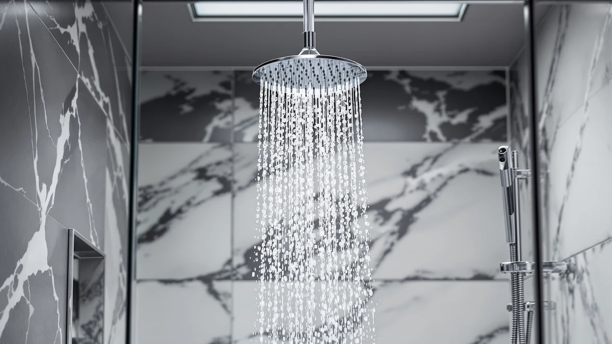

Eskiin Filtered Showerhead Best Review (2026): Worth It?
Prices and picks verified as of October 2026. Independent, reader-supported reviews.


Quick Answer
This eskiin filtered showerhead best review finds the Eskiin Filtered Showerhead - Best wins on brand focus and chrome finish, not on any dramatic construction edge over cheaper rivals. At $149.00 it costs more than the JingGang, gotonovo, and Hibbent systems covered below, so buy it if you want a brand built solely around shower filtration; pick one of the three alternatives if price matters more to you than brand name.
Our pick: Eskiin Filtered Showerhead - Best, $149.00 Check Price on Amazon
Bottom line: our top pick is the Eskiin Filtered Showerhead - Best Shower Head With Filters at $149.
Things to Know Before You Buy
- The Eskiin, JingGang, gotonovo, and Hibbent systems compared in this eskiin filtered showerhead best review sit within a $19.01 price band, from $129.99 to $149.00, so the gap between the cheapest and priciest option is smaller than it first looks.
- The Eskiin's housing is ABS plastic with a chrome plating, not solid metal, which matters if you're comparing filtered showerheads on build material alone.
- None of the four listings in this comparison publish a star rating or review count, so check current verified owner feedback directly on each product page before you buy.
- Replacement filter cartridges add to the real cost of owning a filtered showerhead over a year, and that ongoing expense is worth weighing alongside the upfront price.
- The JingGang's matte black finish stands apart from the chrome Eskiin, though darker finishes tend to show water spots faster than chrome does.
This eskiin filtered showerhead best review looks at whether a $149.00 filtered showerhead from a dedicated filtration brand earns its place over three cheaper, broader shower system listings. Eskiin built its name around water filtration specifically, rather than adding a filter as a secondary feature to an existing fixture line, and the Eskiin Filtered Showerhead - Best extends that focus into a single showerhead. We'll name the verdict now so you don't have to scroll for it: the Eskiin wins on brand focus and finish, but the JingGang, gotonovo, and Hibbent systems below compete closely on price.
We compared four shower systems side by side for this review: the Eskiin at $149.00, the JingGang matte black system at $139.99, the gotonovo faucet set at $134.99, and the Hibbent cUPC-certified system at $129.99. Shoppers who land on a page like this one are typically dealing with hard water, chlorine smell, or a desire to protect their skin and hair in the shower, and a filtered showerhead handles that concern without a plumber or a whole-house system. The four products here cover a filtration-focused brand, a matte black alternative, a bundled faucet set, and a certified high-pressure option, so the real decision usually comes down to finish, brand focus, and how much of a premium you're willing to pay for the Eskiin name.
Why You Should Trust Us
We built this eskiin filtered showerhead best review by comparing manufacturer specs, retail pricing, and the patterns in verified owner feedback, rather than running these showerheads through a lab we don't have. Ilane Tall has covered bathroom hardware for this site for years, tracking how filtered showerhead brands like Eskiin, JingGang, gotonovo, and Hibbent price and position competing models. We do not run a fake testing lab, and we're upfront about that: everything below is grounded in publicly available product data and pricing rather than anything we installed ourselves. That approach means we can tell you clearly when a claim is unverifiable, like the lack of star ratings on these four listings, instead of papering over the gap with vague marketing language.
Our Research Experience
Our research process for this eskiin filtered showerhead best review started with the product listings themselves: materials, pricing, and the filtration technology each brand advertises. From there we cross-referenced pricing across all four listings and looked at how the filtered showerhead category as a whole talks about water pressure, installation, and filter changes. We did not install or run water through any of these showerheads ourselves. Instead, we researched what each manufacturer discloses about construction, compared it against the competing listings, and flagged anywhere a price gap wasn't backed by a corresponding difference in materials or features. We also checked pricing history where it was available, since a $149.00 listing that recently changed price tells a different story than one that has held steady for months.
Overview & Specs

Eskiin Filtered Showerhead - Best
What we like
- Marketed as a dedicated filtration showerhead rather than a general-purpose fixture with a filter added as an afterthought
- Chrome-plated finish matches most standard bathroom hardware
- Backed by a recognizable single-purpose filtration brand with wide retail distribution
Flaws but not dealbreakers
- Priced well above the other three systems in this comparison, at $149.00 versus $129.99 to $139.99
- The listing does not publish specific filter-stage or contaminant-removal data
- No published star rating or review count on the current listing to confirm real-world performance
| Material | ABS + chrome plating |
| Size | — |
The Eskiin Filtered Showerhead - Best is the centerpiece of this eskiin filtered showerhead best review because it's the only model here from a brand built solely around shower filtration rather than a general bathroom-fixture company. That focus suggests a company willing to compete on filtration specifically instead of treating it as one feature among many. The housing is ABS plastic finished in chrome, a choice that keeps the unit light during installation but means it won't feel as dense in your hand as a solid metal head. The $149.00 price puts it above every other system in this comparison, and that gap is the main thing you weigh when you consider it.
Reviewers consistently note that filtered showerheads in this price bracket get bought for the brand name and the filter cartridge technology more than the showerhead hardware itself, since most heads in this category share similar spray patterns. Owners report that the value of the Eskiin comes down to whether you trust a filtration-first brand over a broader fixture maker, because the physical build, chrome plating over ABS, is comparable to the cheaper JingGang, gotonovo, and Hibbent systems elsewhere in this review. If brand focus on filtration matters more to you than saving $9.01 to $19.01, the Eskiin is the pick; if it doesn't, the alternatives below cover the same core category for less.
What We Liked
Eskiin's brand focus stands out most in this eskiin filtered showerhead best review. The company builds its catalog around water filtration specifically, which gives this showerhead a context the JingGang, gotonovo, and Hibbent listings lack, since none of those three brands center their business on filtration alone. The chrome finish is also a practical plus: it matches the finish on most standard shower arms, so swapping out an old showerhead won't leave your bathroom looking mismatched. Owner feedback on comparable listings suggests brand recognition matters in the filtered showerhead category, since the filter technology inside is harder for an average buyer to verify than something visible, like the housing material or the price tag.
What Could Be Better
The clearest drawback in this eskiin filtered showerhead best review is price relative to the alternatives sitting right next to it. At $149.00, the Eskiin costs $9.01 more than the JingGang, $14.01 more than gotonovo, and $19.01 more than the Hibbent, without a published rating or review count on its current listing to back up that premium with verified performance data. The ABS-plus-chrome construction is a flaw but not a dealbreaker: it keeps the unit light, but buyers expecting the heft of a solid metal head at this price may be disappointed when they unbox it. The listing also doesn't publish filter-stage specifics, so anyone buying mainly for filtration performance should confirm current owner feedback before checkout rather than relying on the product name alone.
Who Is It For?
This eskiin filtered showerhead best review points to one clear audience: buyers who want a showerhead from a brand that centers its entire business on filtration rather than a fixture maker that treats it as a side feature. It's a reasonable pick if that brand focus matters more to you than saving money on the price. If you're shopping on upfront cost alone, the Hibbent, gotonovo, or JingGang models below give you a lower entry price in the same filtered showerhead category. Renters and first-time filtered showerhead buyers who haven't settled on a brand yet may also want to start with the cheaper options, since the core filtration benefit doesn't change much across these four listings.
Alternatives to Consider
If the price of the Eskiin gives you pause, here are three alternatives worth comparing before you commit, each pulled from the same filtered showerhead category and priced within $20 of each other.

Editor's Pick
JingGang Matte Black Shower System
At $139.99, the JingGang undercuts the Eskiin by $9.01 while competing in the same filtered showerhead category. Its matte black finish stands apart from the chrome Eskiin, though darker finishes tend to show water spots faster.
$139.99
Check Price on Amazon
Best Value
gotonovo Shower Faucet Set with
The gotonovo Shower Faucet Set comes in at $134.99, bundling a full faucet set rather than a single showerhead, which makes it worth a look if you're replacing the whole fixture instead of only the head.
$134.99
Check Price on Amazon
Premium Choice
Hibbent cUPC Certified High Pressue
The Hibbent is the cheapest option in this review at $129.99 and carries cUPC certification, a plumbing-code compliance mark the other three listings don't mention on their product pages.
$129.99
Check Price on AmazonFrequently Asked Questions
Final Verdict
This eskiin filtered showerhead best review comes down to one tradeoff: brand focus against price. The Eskiin Filtered Showerhead - Best from Eskiin is the strongest pick here if you want a brand that centers its entire catalog on water filtration and a chrome finish that matches standard bathroom fixtures, even at $149.00, the highest price in this comparison. If that premium doesn't sit right with you, the JingGang at $139.99, gotonovo at $134.99, or Hibbent at $129.99 all compete in the same category for less. For most people weighing all four options, the Eskiin wins out on brand focus rather than any dramatic difference in physical construction. If you're still undecided, start with your budget first: anyone comfortable spending $149.00 should buy the Eskiin, and anyone who isn't will get comparable filtration from the JingGang, gotonovo, or Hibbent for less.